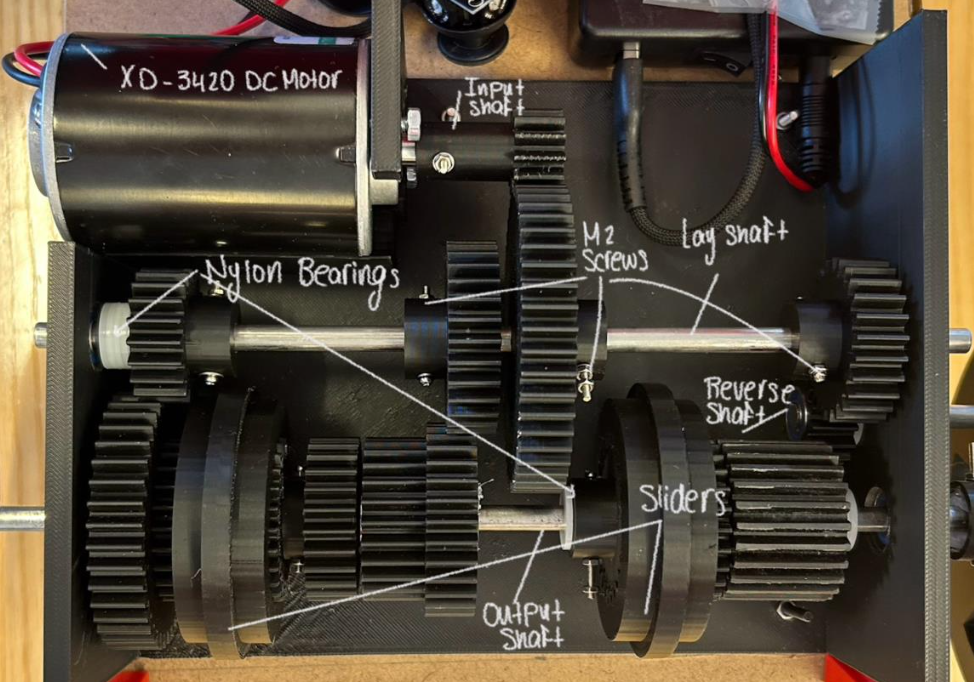

A 3D-printed, remote-controlled car designed for medical use, with a 4-gear drivetrain, steering and onboard programming, built as a Mini Design Project 1 course project.
Mini Design Project 1, York University · Course project
A team design-and-build project for a remote-controlled car intended for a medical-use case, covering the drivetrain, steering and control programming end to end, and manufactured with a mix of 3D printing and machine-shop work.
The drivetrain used a 4-gear system that we designed and 3D printed, and the car was steerable and programmed for remote control. Getting from CAD to a running car also meant machining features that 3D printing alone would not deliver accurately, in particular the shaft holes.
CAD and build documentation to be added.
Four gears, an input, a lay shaft, a reverse shaft, and an output
Built around an XD-3420 DC motor, with nylon bearings on each shaft and M2 screws holding the gear stack together. The sliders on the output shaft handle the gear change.
